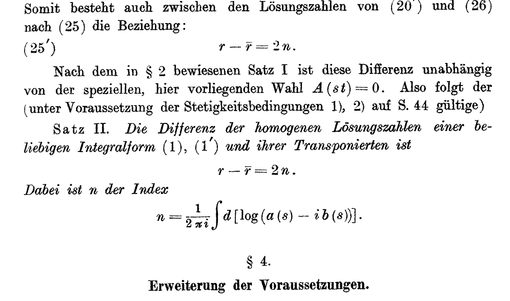

On the circle, L²(S¹) has the basis zⁿ, n ∈ ℤ. The Hardy space H² keeps “the functions with only positive Fourier coefficients”, and the orthogonal projection P onto it “is called the Hardy projection”. A continuous function f acts by multiplication, and the Toeplitz operator is Tf = P Mf: multiply by the symbol f, then throw away the negative frequencies. In the basis z⁰, z¹, … its matrix has entry ci−j, constant along diagonals. CITED
Zois' Lemma 1 is that [P, Mf] is compact, “(hence the Hardy projection is non-local but not very far from being local)”. From it he gets Proposition 1, “Tf Tg − Tf g is compact”, and Corollary 1: if f never vanishes, Tf is Fredholm. Then comes the “Key Question: What is the index of Tf ?” CITED
For Laurent polynomial symbols with integer coefficients the script computes the true infinite product TfTg on the first N basis vectors, subtracts Tfg, and takes the exact rank at N = 12, 24 and 36. The rank does not grow with N. COMPUTED
| f | g | rank of TfTg − Tfg |
|---|---|---|
| z | z⁻¹ | 1 |
| z⁻¹ | z | 0 |
| z² | z⁻² | 2 |
| 1 + z | 2 + z⁻¹ | 1 |
| z⁻² + z | 3 + z² | 0 |
| z⁻¹ − z | z⁻¹ + z³ | 1 |
The first two rows are Chapter 1's shifts. Tz is the forward shift S₁ and Tz⁻¹ is the backward shift B₁. Tz⁻¹Tz = I is bshift_comp_shift, and TzTz⁻¹ = I minus a rank-one map is Chapter 2's shift_bshift_ne_id. The order matters, and the error from getting it wrong is finite.
Zois states the answer as a theorem, “IndTf = −wn(f )”, where wn(f) counts how many times f winds around 0 and is “the only topological invariant of such maps”. CITED
The script computes each winding number two ways: by adding up the change of argument around the circle, and by counting roots inside the unit disc minus the order of the pole at 0. The two agree on all eleven symbols, which cover winding numbers −2 to +3. It then reads the index off the 160×160 block of Tf. The number of near-zero singular values is |wn|. A near-null vector that lives at the start of the basis survives as N grows, so it is a true kernel vector; one that lives at the far end is an artefact of the cut. Sorting them the same way on the other side gives the cokernel. COMPUTED
| symbol f | wn(f) | ker | coker | index |
|---|---|---|---|---|
| z | +1 | 0 | 1 | −1 |
| z³ | +3 | 0 | 3 | −3 |
| z⁻² | −2 | 2 | 0 | +2 |
| 2 + z | 0 | 0 | 0 | 0 |
| 1 + 2z | +1 | 0 | 1 | −1 |
| z⁻¹ + 3 + z/4 | 0 | 0 | 0 | 0 |
| z⁻¹ + z/4 | −1 | 1 | 0 | +1 |
| (z−.3)(z−.5)(z−3)/z | +1 | 0 | 1 | −1 |
| (z−.2)(z+.4i)(z−2)(z−5)/z² | 0 | 0 | 0 | 0 |
| (z−.2)(z−.4)(z−.6)(z−3)/z | +2 | 0 | 2 | −2 |
| (z−.5)(z−2)/z³ | −2 | 2 | 0 | +2 |
In every row the index is −wn(f). This is an observation on eleven symbols made in floating point. It is not a proof. COMPUTED
Two more held texts state the same theorem. Blackadar's K-Theory for Operator Algebras presents it as the first example of the Atiyah–Singer index theorem: for the Toeplitz operator on the Hardy space of the circle, “The Index Theorem then says that Inda(Df) = −(winding number of f)” (Ex. 24.1.2(a), p. 249). An unattributed draft chapter on K-theory states that “the index of A is given by the winding number of the determinant of the symbol”, with a proof that its author has left marked “****Expand”. That makes three modern witnesses, and Noether himself is the fourth (§4). CITED
The paper is Fritz Noether, “Über eine Klasse singulärer Integralgleichungen”, Mathematische Annalen 82 (1921), pp. 42–63. The byline reads “Fritz Noether in Karlsruhe”. The copy held is the Göttingen digitisation of the whole volume, a scan with no text layer, so the script reads it by OCR. CITED
His equations are a(s)φ(s) + ∫ K(s,t)φ(t) dt = f(s), with a kernel that has a simple pole at s = t. He came to them through boundary problems for the tides and for slightly viscous fluids. His Satz I says that the difference between the number of homogeneous solutions of the equation and of its transpose depends only on the coefficient functions a and b. Satz II computes it:

In words: r − r̄ = 2n, “Dabei ist n der Index”, where n = (1/2πi)∫ d[log(a(s) − i b(s))]. That integral is the winding number of the curve a − ib. Noether's equations are real, which is why the count comes out as 2n rather than n. The orientation convention fixes the sign, and Zois writes the modern normalisation, Ind Tf = −wn(f). The content is the same: the difference of two solution counts is fixed by how often a symbol winds around zero. CITED
Two details in the paper are worth noting. The word “Index”, which he sets in quotation marks on p. 52, names the winding number itself, not the difference of dimensions it computes. And he explains the result with Chapter 2's rectangular matrices: seen as an analogue of linear systems, these are equations with a different “Anzahl der Reihen und der Kolonnen” (number of rows and columns), and “die Differenz eine bestimmte und explizit angebbare”: the difference is definite and can be stated explicitly (p. 43). His §4 goes further: with discontinuous coefficients the index can be half an odd integer, and the difference of solution counts is then odd. CITED
Zois' proof is short: “Each homotopy class contains a representative z m and we just check what the answer is on this representative.” For f = z he ends: “Thus Tz is the unilateral shift with index −1.” CITED
The proof therefore has two halves. The second half, that Tzᵐ is the m-fold shift with index −m, is Chapter 1's shift_index, proved from actual kernels and cokernels. The first half is analysis. Every nowhere-zero symbol can be deformed to some zᵐ without vanishing, and the index does not change along the way (Zois' Prop. 2). Nothing in this book proves that half. This is the gap Chapter 1 named: −k and the winding number of zᵐ agree, but until the deformation step is formalised, that agreement is an observation, not a theorem. WANTED
Zois then replaces the circle by any compact space X. A Hilbert space on which the functions on X act, a projection P, and compact commutators [P, Mf] together make up what he calls “an odd K-cycle for the space X, namely an element of K −1 (X)”. The Toeplitz index becomes a homomorphism K⁻¹(X) → ℤ, and “This suggests that K-cycles should generate a ”dual” to K-Theory, namely K-Homology.” With a noncommutative algebra in place of C(X), this is “K-cycle a la Connes in Noncommutative Geometry”, the subject reserved for rung 33. CITED
This book's contents first planned a chapter titled “why odd dimensions give index zero”. No held source supports that sentence, so it was withdrawn. The held sources support a different one. Blackadar gives two examples that “illustrate the typical content of the Index Theorem in the odd- and even-dimensional cases respectively”. The circle, which has dimension 1, is the odd case, and its index is this chapter's Toeplitz index. The even case is the Riemann–Roch theorem on a surface, which is Chapter 4. CITED
The script searches Mathlib at the revision in lake-manifest.json for each ingredient of the bridge. COMPUTED
| ingredient | in Mathlib? |
|---|---|
the algebraic index, LinearMap.index | yes |
compact operators, IsCompactOperator | yes |
integrals round a circle, circleIntegral | yes |
| Fredholm operators | no WANTED |
| the winding number of a loop in ℂ˟ | no WANTED |
| the Hardy space H² and its projection | no WANTED |
| Toeplitz operators | no WANTED |
| the Calkin algebra B(H)/K(H) | no WANTED |
The library is waiting for the same thing. A comment in Mathlib/Analysis/Normed/Operator/Banach.lean reads: “TODO: once mathlib has Fredholm operators, generalise the next four lemmas accordingly”. COMPUTED
There are two Noethers. The index theorem is Fritz Noether's (1921); his byline says so (profile: Book VII). Five texts on the shelf titled “Noether's theorem” are about a different result: Emmy Noether's 1918 theorem linking symmetries to conservation laws. The script checks that they say “1918” 25 times and never mention “Fritz” or “Toeplitz”. How the two Noethers were related is not established by any text held here. WANTED
The only “Toeplitz” in Mathlib today is the Hellinger–Toeplitz theorem, which says a symmetric operator defined on a whole Hilbert space is bounded. It is the same Otto Toeplitz, and the theorem is about a different operator. COMPUTED
Algebra/Module/LinearMap/Index.lean, Analysis/Normed/Operator/Banach.lean, Analysis/InnerProductSpace/Symmetric.lean.